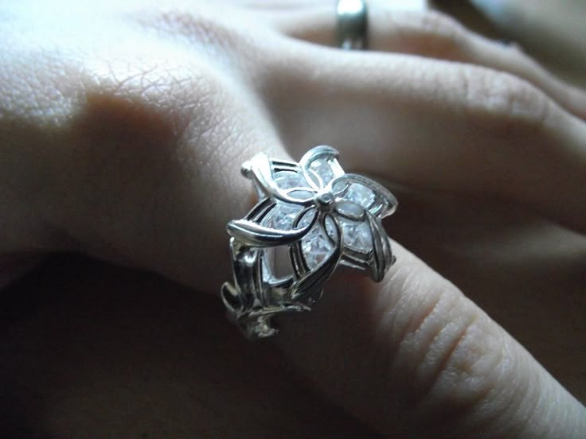

Explora la Tierra Media
Sumérgete en la épica historia de los Anillos de Poder, donde la lucha entre la luz y la oscuridad define el destino de todos.
Ver trailer

Los 20 Anillos de Poder y su Propósito
Los Tres Anillos Élficos (forjados sin la intervención directa de Sauron): Vilya (Anillo del Aire, azul) → Perteneció a Gil-Galad y luego a Elrond. Narya (Anillo del Fuego, rojo) → Entregado a Círdan y después a Gandalf. Nenya (Anillo del Agua, blanco) → Portado por Galadriel. Estos anillos no corrompían y estaban destinados a preservar la belleza y sabiduría de los elfos.
Los Siete Anillos de los Enanos: Fueron dados a los líderes de los siete clanes enanos. Aumentaban la riqueza de sus portadores, pero también intensificaban su avaricia. No los corrompieron como a los hombres, ya que los enanos eran resistentes al control de Sauron. Con el tiempo, casi todos fueron destruidos o recuperados por Sauron.
Los Nueve Anillos de los Hombres: Fueron entregados a reyes y señores humanos, otorgándoles poder y longevidad. Sin embargo, los convirtieron en Nazgûl (Espectros del Anillo), sirvientes de Sauron esclavizados por su voluntad.
El Anillo Único: Fue forjado en secreto por Sauron en el Monte del Destino. Contenía una parte significativa de su poder, lo que le permitió dominar a los otros anillos. Su propósito era controlar a todos los portadores de los demás anillos y someterlos a su voluntad.
Personajes principales
Galadriel
Galadriel es una de las protagonistas principales de la serie Los Anillos del Poder. Se la presenta como una guerrera decidida y obsesionada con erradicar el mal. Las historias relacionadas con ella en la serie son buscar a Sauron, su relacion con Halbrand y la creacion de los Tres Anillos Élficos, de los cuales se apropiaria de Nenya, uno de esos tres anillos.
Galadriel
Galadriel es una de las protagonistas principales de la serie Los Anillos del Poder. Se la presenta como una guerrera decidida y obsesionada con erradicar el mal. Las historias relacionadas con ella en la serie son buscar a Sauron, su relacion con Halbrand y la creacion de los Tres Anillos Élficos, de los cuales se apropiaria de Nenya, uno de esos tres anillos.
Galadriel
Galadriel es una de las protagonistas principales de la serie Los Anillos del Poder. Se la presenta como una guerrera decidida y obsesionada con erradicar el mal. Las historias relacionadas con ella en la serie son buscar a Sauron, su relacion con Halbrand y la creacion de los Tres Anillos Élficos, de los cuales se apropiaria de Nenya, uno de esos tres anillos.